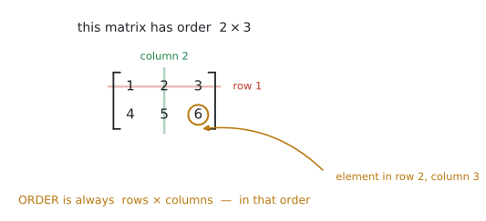
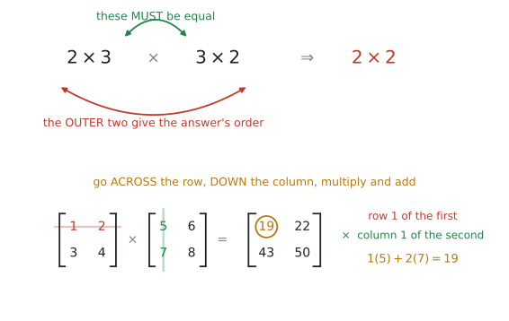
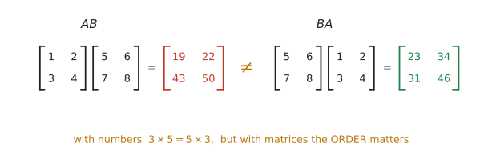
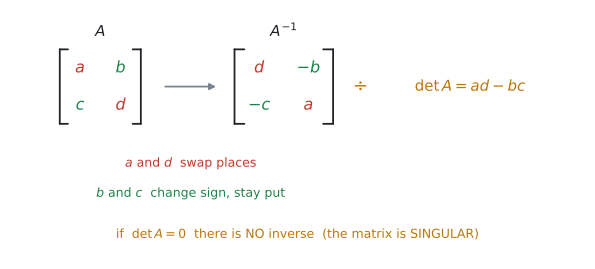
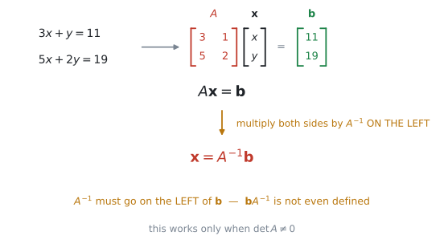
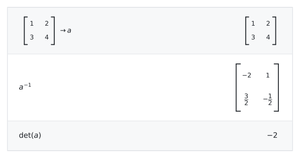

AHL 1.14 — Matrices（行列）
- matrix（行列）の element（成分）、row（行）、column（列）、order（型）を言える。
- 足し算・引き算・scalar（実数）倍ができる。同じ order どうしでしかできない。
- かけ算ができる。内側の数がそろっているかを先に確かめられる。
- \(AB\) と \(BA\) はふつう違うと分かる（non-commutative）。
- identity matrix \(I\) と zero matrix \(\mathbf{0}\) が何かを言える。
- \(2 \times 2\) の determinant（行列式）と inverse（逆行列）を手で出せる。
- \(\det = 0\) なら inverse がない（singular）と分かる。
- 連立方程式を \(A\mathbf{x} = \mathbf{b}\) と書き、\(\mathbf{x} = A^{-1}\mathbf{b}\) で解ける。
- 暗号や売上の計算など、文脈のある問題に行列を使える。
公式集の AHL 1.14 の欄には、次の \(2\) つがあります。どちらも \(2 \times 2\) 専用です。
\[ A = \begin{pmatrix} a & b \\ c & d \end{pmatrix} \ \Rightarrow \ \det A = |A| = ad - bc \tag{1}\]
\[ A = \begin{pmatrix} a & b \\ c & d \end{pmatrix} \ \Rightarrow \ A^{-1} = \frac{1}{\det A}\begin{pmatrix} d & -b \\ -c & a \end{pmatrix} \tag{2}\]
この \(2\) つは覚えなくて構いません。 試験で配られます。
いっぽう、次のものは載っていません。
| 載っていないもの | どうするか |
|---|---|
| かけ算のしかた | 手が覚えるまで練習する（この項目の中心） |
| identity matrix \(I\) | \(\begin{pmatrix} 1 & 0 \\ 0 & 1 \end{pmatrix}\) を覚える |
| \(A\mathbf{x} = \mathbf{b} \Rightarrow \mathbf{x} = A^{-1}\mathbf{b}\) | 覚える。\(A^{-1}\) は \(\mathbf{b}\) の左に置く |
行列は、日本の高校数学から \(2012\) 年の課程で外れました。\(2022\) 年からの数学Cで「数学的な表現の工夫」の中に戻りましたが、深くは扱われません。
ですから、知らなくて当たり前です。このページは、まったく初めてのつもりで書いてあります。
The idea
1. 行列は、数を長方形に並べたものです
まずは言葉からです。

図 1 の \(1\) つ \(1\) つの数を element（成分）と呼びます。横の並びが row（行）、縦の並びが column（列）です。
そして、行と列の数を並べたものが order（型）です。
なぜ「行 × 列」の順なのか
図 1 の行列は \(2 \times 3\) です。\(3 \times 2\) ではありません。
縦が先、横があと。 順番を逆にすると、このあとのかけ算が全部おかしくなります。
\(m \times n\) の \(m\) が行の数、\(n\) が列の数です。行が \(1\) つだけのものを row matrix、列が \(1\) つだけのものを column matrix と呼びます。
\[ \begin{pmatrix} 1 & 2 & 3 \end{pmatrix} \ \text{は } 1 \times 3, \qquad \begin{pmatrix} 1 \\ 2 \end{pmatrix} \ \text{は } 2 \times 1 \]
2. 足し算・引き算・実数倍は、そのまま
ここは難しくありません。同じ場所どうしを計算するだけです。
\[ \begin{pmatrix} 1 & 2 \\ 3 & 4 \end{pmatrix} + \begin{pmatrix} 5 & 0 \\ -1 & 2 \end{pmatrix} = \begin{pmatrix} 6 & 2 \\ 2 & 6 \end{pmatrix} \]
実数（scalar）倍も、全部の element に掛けるだけです。
\[ 3\begin{pmatrix} 1 & 2 \\ 3 & 4 \end{pmatrix} = \begin{pmatrix} 3 & 6 \\ 9 & 12 \end{pmatrix} \]
\(2 \times 2\) と \(2 \times 3\) は足せません。 場所が対応しないからです。
問題文を読んだら、まず order を確かめる習慣をつけてください。
equality（相等）も同じ考え方です。\(2\) つの行列が等しいとは、order が同じで、対応する element が全部等しいということです。
3. かけ算
この項目の中心です。 足し算とはまったく違う計算になります。

まず、計算できるかどうかを確かめます
\((m \times n)\) と \((n \times p)\) を掛けるとき、内側の \(n\) がそろっている必要があります。
\[ (2 \times \underline{3})(\underline{3} \times 2) \ \Rightarrow \ 2 \times 2 \]
内側がそろっていなければ、その掛け算は存在しません（not defined と書きます）。答えの order は、外側の \(2\) つです。
計算のしかた
図 2 の下半分がその手順です。
左の行列の「行」を横に、右の行列の「列」を縦に見て、掛けて足す。
\(1\) 行目 \(\times\) \(1\) 列目が、答えの \(1\) 行 \(1\) 列目になります。
\[ \begin{pmatrix} 1 & 2 \\ 3 & 4 \end{pmatrix}\begin{pmatrix} 5 & 6 \\ 7 & 8 \end{pmatrix} = \begin{pmatrix} 1(5)+2(7) & 1(6)+2(8) \\ 3(5)+4(7) & 3(6)+4(8) \end{pmatrix} = \begin{pmatrix} 19 & 22 \\ 43 & 50 \end{pmatrix} \]
左手の指で左の行列の行をなぞり、右手の指で右の行列の列をなぞります。
同時に動かして、出会った数どうしを掛けて足す。 慣れるまでは、声に出して「いち・ご、に・なな」と数えると間違いません。
4. \(AB\) と \(BA\) は、ふつう違います
シラバスが名指ししている性質です。
Properties of matrix multiplication: associativity, distributivity and non-commutativity.

同じ \(2\) つの行列でも、掛ける順番を変えると答えが変わります。
| 性質 | 成り立つか |
|---|---|
| associative（結合法則） \(\ (AB)C = A(BC)\) | ○ 成り立ちます |
| distributive（分配法則） \(\ A(B+C) = AB + AC\) | ○ 成り立ちます |
| commutative（交換法則） \(\ AB = BA\) | ✗ ふつう成り立ちません |
数では \(3 \times 5 = 5 \times 3\) ですが、行列は違います。
しかも、\(AB\) は計算できるのに \(BA\) は not defined、ということも起こります（\(2\times3\) と \(3\times2\) がその例です）。
式を写すときに順番を入れかえない。 これだけで、かなりの失点が防げます。
5. \(I\) と \(\mathbf{0}\)
シラバスは記号まで指定しています。
Students should be familiar with the notation \(I\) and \(\mathbf{0}\).
identity matrix（単位行列）は、左上から右下の diagonal（対角）が \(1\) で、あとは \(0\) の正方行列です。
\[ I = \begin{pmatrix} 1 & 0 \\ 0 & 1 \end{pmatrix} \]
これは数の \(1\) にあたるものです。
\[ AI = IA = A \]
zero matrix \(\mathbf{0}\) は全部の element が \(0\) の行列で、数の \(0\) にあたるものです。\(A + \mathbf{0} = A\) になります。
6. determinant と inverse
inverse matrix（逆行列）\(A^{-1}\) は、掛けると \(I\) になる行列です。
\[ AA^{-1} = A^{-1}A = I \]
数の逆数にあたるものだと思ってください。\(5\) に対する \(\frac{1}{5}\) です。

式 2 が公式集の式です。図 4 のとおり、\(a\) と \(d\) を入れかえ、\(b\) と \(c\) の符号を変えて、\(\det A\) で割るだけです。
\(\det A = 0\) のとき
式 2 の \(\dfrac{1}{\det A}\) で、\(0\) で割ることになるからです。
このような行列を singular matrix（特異行列）と呼びます。逆に \(\det A \neq 0\) なら non-singular / invertible です。
シラバスにこう書いてあります。
In examinations \(A\) will always be an invertible matrix, except when solving for eigenvectors.
つまり試験で \(A^{-1}\) を求めさせるときは、必ず \(\det A \neq 0\) になっています。 安心して進めてください（例外は AHL 1.15 の固有ベクトルのときだけです）。
\(3 \times 3\) 以上は電卓で
シラバスは、はっきり分けています。
Determinants and inverses of \(n \times n\) matrices with technology, and by hand for \(2 \times 2\) matrices.
手で出すのは \(2 \times 2\) だけです。\(3 \times 3\) 以上は電卓を使います。
7. 連立方程式を、行列で解きます
行列がいちばん役に立つ場面です。
そもそも、なぜ連立方程式を解くのか
「条件がいくつもあって、その全部を同時に満たす値を探す」という場面は、現実にいくらでもあります。
- 配合 … タンパク質も脂質もカロリーも、指定どおりの量にしたい
- 電気回路 … どの分岐点でも、入ってくる電流と出ていく電流がつり合っていなければならない
- 価格の割り出し … 「\(A\) を \(3\) 個と \(B\) を \(2\) 個で \(11\) ドル」という記録が、何本もある
条件が \(1\) つなら方程式は \(1\) 本ですが、条件が \(n\) 個あれば式も \(n\) 本になります。これが連立方程式です。SL 1.8 では、これを電卓の機能で解きました。この項目では、同じことを行列で書きます。
行列にすると、何が便利になるのか
\(3\) つあります。
1. 式が何本でも、書き方が変わりません。
\(2\) 本でも \(100\) 本でも、形は \(A\mathbf{x} = \mathbf{b}\) のままです。式の本数が増えても、やることは同じになります。
2. 文字が消えて、数の並びだけが残ります。
\(x\) や \(y\) という名前は、行列のどこにあるかで決まります。ですから、係数を並べた表さえあれば計算が進みます。そのまま機械に渡せる形になっている、ということです。
3. 同じ \(A\) を、何度も使い回せます。
条件のほう（\(A\)）は変わらず、右辺（\(\mathbf{b}\)）だけが毎日変わる、という場面はよくあります。\(A^{-1}\) を \(1\) 回作ってしまえば、あとは掛けるだけです。
コンピュータも、この形で計算しています
「連立方程式を解く」という処理は、コンピュータの中では行列の形で行われています。画面の中で図形を動かすときも（AHL 3.9）、天気予報や橋の強度を計算するときも、中身はこの形です。式が何十万本になることもあります。
\(A^{-1}\) を求めてから掛けるより、\(A\) を分解して \(\mathbf{x}\) を直接求めるほうが速く、誤差も小さいからです。大学で LU 分解などとして習います。
試験では \(\mathbf{x} = A^{-1}\mathbf{b}\) で構いません。 \(2 \times 2\) や \(3 \times 3\) では、どちらでも答えは同じです。

\[ \begin{cases} 3x + y = 11 \\ 5x + 2y = 19 \end{cases} \quad \Longleftrightarrow \quad \begin{pmatrix} 3 & 1 \\ 5 & 2 \end{pmatrix}\begin{pmatrix} x \\ y \end{pmatrix} = \begin{pmatrix} 11 \\ 19 \end{pmatrix} \]
左の行列が coefficient matrix（係数行列）\(A\)、真ん中が \(\mathbf{x}\)、右が \(\mathbf{b}\) です。
\[ A\mathbf{x} = \mathbf{b} \quad \Longrightarrow \quad \mathbf{x} = A^{-1}\mathbf{b} \tag{3}\]
実際に、この式で解いてみます。
手順1 … \(\det A\) を出します。
\[ \det A = 3(2) - 1(5) = 1 \]
\(0\) ではないので、\(A^{-1}\) があります（第6節）。
手順2 … \(A^{-1}\) を作ります。
公式のとおり、対角線を入れかえて、残りの \(2\) つの符号を変えて、\(\det A\) で割ります。
\[ A^{-1} = \frac{1}{1}\begin{pmatrix} 2 & -1 \\ -5 & 3 \end{pmatrix} = \begin{pmatrix} 2 & -1 \\ -5 & 3 \end{pmatrix} \]
\(\det A = 1\) なので、今回は割り算が要りません。
手順3 … \(\mathbf{b}\) に、左から掛けます。
\[ \mathbf{x} = \begin{pmatrix} 2 & -1 \\ -5 & 3 \end{pmatrix}\begin{pmatrix} 11 \\ 19 \end{pmatrix} = \begin{pmatrix} 2(11) + (-1)(19) \\ (-5)(11) + 3(19) \end{pmatrix} = \begin{pmatrix} 3 \\ 2 \end{pmatrix} \]
答えは \(x = 3\)、\(y = 2\) です。
検算。 \(3(3) + 2 = 11\) ✓ \(5(3) + 2(2) = 19\) ✓ もとの \(2\) 本の式に入れて、両方とも合うことを確かめてください。
\(\mathbf{x}\) は \(2 \times 1\) の column matrix なので、\(x\) と \(y\) が上下に並んで出てきます。
上が \(x\)、下が \(y\) です。\(A\) を作ったときに並べた順番と同じになります。答えを書くときは \(x = 3\)、\(y = 2\) と横に直して構いません。
\(AB \neq BA\) だからです。順番が意味を持ちます。
しかも \(\mathbf{b}A^{-1}\) は、order が合わないので not defined です（\(2\times1\) と \(2\times2\)）。
\(\mathbf{x} = A^{-1}\mathbf{b}\)。 この形で覚えてください。
Why it works
なぜ \(\mathbf{x} = A^{-1}\mathbf{b}\) になるのか。ここだけ説明します。
ふつうの方程式 \(5x = 20\) を思い出してください。両辺を \(5\) で割る、つまり\(\frac{1}{5}\) を掛けると \(x = 4\) が出ます。
行列でも同じことをします。\(A\mathbf{x} = \mathbf{b}\) の両辺に、左から \(A^{-1}\) を掛けます。
\[ A^{-1}(A\mathbf{x}) = A^{-1}\mathbf{b} \]
左辺は associative なので、こう書きかえられます。
\[ (A^{-1}A)\mathbf{x} = A^{-1}\mathbf{b} \]
\(A^{-1}A = I\) ですから、
\[ I\mathbf{x} = A^{-1}\mathbf{b} \]
そして \(I\) は数の \(1\) にあたるものなので、\(I\mathbf{x} = \mathbf{x}\)。
\[ \mathbf{x} = A^{-1}\mathbf{b} \]
「左から」掛けるのが大事です。右から掛けると \(A\mathbf{x}A^{-1}\) となり、\(A^{-1}A\) の形が作れません。順番が意味を持つ、というのはこういうことです。
Worked examples
問題文は英語です。意味が理解できなかったら、問題文の下の「日本語訳」を開いてください。解説は日本語です。
例題 1 Let \(A = \begin{pmatrix} 2 & 0 & -1 \\ 3 & 1 & 4 \end{pmatrix}\) and \(B = \begin{pmatrix} 1 & 5 & 2 \\ 0 & -2 & 3 \end{pmatrix}\).
(a) Write down the order of \(A\).
(b) Find \(2A - B\).
(c) Explain why \(AB\) is not defined.
日本語訳
\(A = \begin{pmatrix} 2 & 0 & -1 \\ 3 & 1 & 4 \end{pmatrix}\)、\(B = \begin{pmatrix} 1 & 5 & 2 \\ 0 & -2 & 3 \end{pmatrix}\) とします。
(a) \(A\) の order を書きなさい。
(b) \(2A - B\) を求めなさい。
(c) \(AB\) が定義されない理由を説明しなさい。
(a) 行が \(2\) つ、列が \(3\) つ。行が先です。
\[ 2 \times 3 \]
(b) まず \(2A\) を作り、それから \(B\) を引きます。同じ場所どうしです。
\[ 2A = \begin{pmatrix} 4 & 0 & -2 \\ 6 & 2 & 8 \end{pmatrix} \]
\[ 2A - B = \begin{pmatrix} 4-1 & 0-5 & -2-2 \\ 6-0 & 2-(-2) & 8-3 \end{pmatrix} = \begin{pmatrix} 3 & -5 & -4 \\ 6 & 4 & 5 \end{pmatrix} \]
(c) \(A\) は \(2 \times 3\)、\(B\) も \(2 \times 3\)。内側は \(3\) と \(2\) で、そろっていません。
\(B\) の element が負のとき、引き算で符号が \(2\)回変わります。カッコを書いてから計算すると間違いません。
(a) \(2 \times 3\)
(b) \(2A - B = \begin{pmatrix} 3 & -5 & -4 \\ 6 & 4 & 5 \end{pmatrix}\)
(c) \(A\) is \(2 \times 3\) and \(B\) is \(2 \times 3\). For \(AB\) the number of columns of \(A\) (\(3\)) must equal the number of rows of \(B\) (\(2\)), and it does not, so \(AB\) is not defined.
例題 2 Let \(A = \begin{pmatrix} 1 & 2 \\ 3 & 4 \end{pmatrix}\) and \(B = \begin{pmatrix} 5 & 6 \\ 7 & 8 \end{pmatrix}\).
(a) Find \(AB\).
(b) Find \(BA\).
(c) Comment on your answers.
日本語訳
\(A = \begin{pmatrix} 1 & 2 \\ 3 & 4 \end{pmatrix}\)、\(B = \begin{pmatrix} 5 & 6 \\ 7 & 8 \end{pmatrix}\) とします。
(a) \(AB\) を求めなさい。
(b) \(BA\) を求めなさい。
(c) \(2\) つの答えについてコメントしなさい。
(a) 行を横に、列を縦に。
\[ AB = \begin{pmatrix} 1(5)+2(7) & 1(6)+2(8) \\ 3(5)+4(7) & 3(6)+4(8) \end{pmatrix} = \begin{pmatrix} 19 & 22 \\ 43 & 50 \end{pmatrix} \]
(b) 今度は \(B\) の行、\(A\) の列です。
\[ BA = \begin{pmatrix} 5(1)+6(3) & 5(2)+6(4) \\ 7(1)+8(3) & 7(2)+8(4) \end{pmatrix} = \begin{pmatrix} 23 & 34 \\ 31 & 46 \end{pmatrix} \]
(c) 数値だけでは点になりません。性質の名前を書いてください。
試験ではこう書く
\(AB \neq BA\), so matrix multiplication is not commutative.
（\(AB\) と \(BA\) は等しくない、つまり行列のかけ算には交換法則が成り立たない、という意味です。）
(a) \(AB = \begin{pmatrix} 19 & 22 \\ 43 & 50 \end{pmatrix}\)
(b) \(BA = \begin{pmatrix} 23 & 34 \\ 31 & 46 \end{pmatrix}\)
(c) \(AB \neq BA\), so matrix multiplication is not commutative.
例題 3 A café records the number of items sold on two days.
| Coffee | Tea | Cake | |
|---|---|---|---|
| Monday | \(12\) | \(8\) | \(5\) |
| Tuesday | \(10\) | \(14\) | \(6\) |
A coffee costs $\(4\), a tea costs $\(7\) and a cake costs $\(10\).
(a) Write down a \(3 \times 1\) matrix \(P\) for the prices.
(b) Find \(SP\), where \(S\) is the \(2 \times 3\) matrix of sales.
(c) Interpret the elements of \(SP\) in the context of the question.
日本語訳
あるカフェが、\(2\) 日間に売れた商品の数を記録しました。見出しは Coffee がコーヒー、Tea が紅茶、Cake がケーキです。
コーヒーは $\(4\)、紅茶は $\(7\)、ケーキは $\(10\) です。
(a) 値段を表す \(3 \times 1\) の行列 \(P\) を書きなさい。
(b) 売上の \(2 \times 3\) 行列を \(S\) として、\(SP\) を求めなさい。
(c) \(SP\) の各成分を、問題の文脈で解釈しなさい。
(a) 値段は縦に並べます。そうしないとかけ算ができません。
\[ P = \begin{pmatrix} 4 \\ 7 \\ 10 \end{pmatrix} \]
(b) \((2 \times 3)(3 \times 1)\) なので、内側は \(3\) でそろっています。答えは \(2 \times 1\) です。
\[ SP = \begin{pmatrix} 12 & 8 & 5 \\ 10 & 14 & 6 \end{pmatrix}\begin{pmatrix} 4 \\ 7 \\ 10 \end{pmatrix} = \begin{pmatrix} 12(4)+8(7)+5(10) \\ 10(4)+14(7)+6(10) \end{pmatrix} \]
\[ = \begin{pmatrix} 48+56+50 \\ 40+98+60 \end{pmatrix} = \begin{pmatrix} 154 \\ 198 \end{pmatrix} \]
(c)
試験ではこう書く
The café took $\(154\) on Monday and $\(198\) on Tuesday.
横に並べて \(1 \times 3\) にすると、\((2\times3)(1\times3)\) となって内側がそろいません。
「掛けたい相手の行数」に合わせて並べる、と考えてください。ここでは \(S\) の列が \(3\) つなので、\(P\) の行も \(3\) つにします。
(a) \(P = \begin{pmatrix} 4 \\ 7 \\ 10 \end{pmatrix}\)
(b) \(SP = \begin{pmatrix} 154 \\ 198 \end{pmatrix}\)
(c) The café took $\(154\) on Monday and $\(198\) on Tuesday.
例題 4 Consider the system of equations
\[ 3x + y = 11, \qquad 5x + 2y = 19 \]
(a) Write the system in the form \(A\mathbf{x} = \mathbf{b}\).
(b) Find \(\det A\) and \(A^{-1}\).
(c) Hence solve the system.
日本語訳
次の連立方程式を考えます。
\[ 3x + y = 11, \qquad 5x + 2y = 19 \]
(a) この連立方程式を \(A\mathbf{x} = \mathbf{b}\) の形に書きなさい。
(b) \(\det A\) と \(A^{-1}\) を求めなさい。
(c) これを使って、連立方程式を解きなさい。
(a) \(x\) と \(y\) の係数を、式の順番のまま並べます。
\[ \begin{pmatrix} 3 & 1 \\ 5 & 2 \end{pmatrix}\begin{pmatrix} x \\ y \end{pmatrix} = \begin{pmatrix} 11 \\ 19 \end{pmatrix} \]
\[ \det A = 3(2) - 1(5) = 6 - 5 = 1 \]
\[ A^{-1} = \frac{1}{1}\begin{pmatrix} 2 & -1 \\ -5 & 3 \end{pmatrix} = \begin{pmatrix} 2 & -1 \\ -5 & 3 \end{pmatrix} \]
(c) Hence は「(b) の答えを使え」という意味です。式 3 に入れます。
\[ \mathbf{x} = A^{-1}\mathbf{b} = \begin{pmatrix} 2 & -1 \\ -5 & 3 \end{pmatrix}\begin{pmatrix} 11 \\ 19 \end{pmatrix} = \begin{pmatrix} 2(11)-1(19) \\ -5(11)+3(19) \end{pmatrix} = \begin{pmatrix} 3 \\ 2 \end{pmatrix} \]
\[ x = 3, \qquad y = 2 \]
検算。 \(3(3) + 2 = 11\) ✓、\(5(3) + 2(2) = 19\) ✓
試験で「手で解きなさい」と出るときは、\(\det A\) が \(1\) や \(-1\)、あるいは小さい整数になるように作られています。
分数が大量に出てきたら、\(\det\) の計算を疑ってください。
(a) \(\begin{pmatrix} 3 & 1 \\ 5 & 2 \end{pmatrix}\begin{pmatrix} x \\ y \end{pmatrix} = \begin{pmatrix} 11 \\ 19 \end{pmatrix}\)
(b) \(\det A = 6 - 5 = 1\); \(A^{-1} = \begin{pmatrix} 2 & -1 \\ -5 & 3 \end{pmatrix}\)
(c) \(\mathbf{x} = A^{-1}\mathbf{b} = \begin{pmatrix} 3 \\ 2 \end{pmatrix}\), so \(x = 3\) and \(y = 2\).
例題 5 A message is coded using the matrix \(A = \begin{pmatrix} 3 & 1 \\ 5 & 2 \end{pmatrix}\). Each letter is replaced by its position in the alphabet, so that \(\text{A} = 1\), \(\text{B} = 2\), and so on. The numbers are then taken in pairs as column matrices and multiplied by \(A\).
(a) Code the word CODE.
(b) A message is received as \(17, \ 30\). Decode it.
日本語訳
行列 \(A = \begin{pmatrix} 3 & 1 \\ 5 & 2 \end{pmatrix}\) を使って、メッセージを暗号にします。それぞれの文字を、アルファベットの中での位置の数に置きかえます（\(\text{A} = 1\)、\(\text{B} = 2\)、…）。その数を \(2\) つずつ組にして column matrix にし、\(A\) を掛けます。
(a) CODE という単語を暗号にしなさい。
(b) 受け取ったメッセージが \(17, \ 30\) でした。これを解読しなさい。
(a) まず文字を数に直します。\(\text{C} = 3\)、\(\text{O} = 15\)、\(\text{D} = 4\)、\(\text{E} = 5\)。
\(2\) つずつ組にして、縦に並べます。
\[ \begin{pmatrix} 3 \\ 15 \end{pmatrix}, \qquad \begin{pmatrix} 4 \\ 5 \end{pmatrix} \]
それぞれに \(A\) を掛けます。
\[ \begin{pmatrix} 3 & 1 \\ 5 & 2 \end{pmatrix}\begin{pmatrix} 3 \\ 15 \end{pmatrix} = \begin{pmatrix} 9+15 \\ 15+30 \end{pmatrix} = \begin{pmatrix} 24 \\ 45 \end{pmatrix} \]
\[ \begin{pmatrix} 3 & 1 \\ 5 & 2 \end{pmatrix}\begin{pmatrix} 4 \\ 5 \end{pmatrix} = \begin{pmatrix} 12+5 \\ 20+10 \end{pmatrix} = \begin{pmatrix} 17 \\ 30 \end{pmatrix} \]
暗号は \(24, \ 45, \ 17, \ 30\) です。
(b) 暗号にするときに \(A\) を掛けたのですから、もどすには \(A^{-1}\) を掛けます。
\[ A^{-1} = \begin{pmatrix} 2 & -1 \\ -5 & 3 \end{pmatrix} \quad (\det A = 1) \]
\[ \begin{pmatrix} 2 & -1 \\ -5 & 3 \end{pmatrix}\begin{pmatrix} 17 \\ 30 \end{pmatrix} = \begin{pmatrix} 34-30 \\ -85+90 \end{pmatrix} = \begin{pmatrix} 4 \\ 5 \end{pmatrix} \]
\(4 = \text{D}\)、\(5 = \text{E}\) なので DE です。
シラバスは、この使い道を名前で挙げています。
Model and solve real-life problems including: Coding and decoding messages
暗号にするのが \(A\)、もどすのが \(A^{-1}\)。 この対応だけ押さえておけば大丈夫です。
そうでないと、\(A^{-1}\) に分数が出て、もどした答えが整数になりません。
文字の番号は整数なので、答えに分数が出たらどこかで計算を間違えています。
(a) \(\text{C},\text{O},\text{D},\text{E} \to 3, 15, 4, 5\)
\(A\begin{pmatrix} 3 \\ 15 \end{pmatrix} = \begin{pmatrix} 24 \\ 45 \end{pmatrix}\), \(A\begin{pmatrix} 4 \\ 5 \end{pmatrix} = \begin{pmatrix} 17 \\ 30 \end{pmatrix}\)
Coded message: \(24, \ 45, \ 17, \ 30\)
(b) \(A^{-1} = \begin{pmatrix} 2 & -1 \\ -5 & 3 \end{pmatrix}\); \(A^{-1}\begin{pmatrix} 17 \\ 30 \end{pmatrix} = \begin{pmatrix} 4 \\ 5 \end{pmatrix} \to \text{DE}\)
Common errors
いつも rows \(\times\) columns です。
\(2\) 行 \(3\) 列なら \(2 \times 3\)。ここを逆にすると、かけ算ができるかどうかの判定まで狂います。
足し算と同じつもりで \(\begin{pmatrix} 1 & 2 \\ 3 & 4 \end{pmatrix}\begin{pmatrix} 5 & 6 \\ 7 & 8 \end{pmatrix} = \begin{pmatrix} 5 & 12 \\ 21 & 32 \end{pmatrix}\) としてしまう誤りです。
かけ算は行 \(\times\) 列。足し算とはまったく別の計算です。
問題文が \(BA\) なのに \(AB\) を計算すると、答えは別物になります（図 3）。
書き写すときに順番を変えない。 計算を始める前に、もう一度問題文を見てください。
\((2\times3)(2\times3)\) は計算できません。
掛ける前に、必ず order を書き出す習慣をつけてください。\(1\) 行書くだけで防げます。
符号を変えるのは \(b\) と \(c\) だけです。\(a\) と \(d\) は入れかわるだけで、符号はそのままです（図 4）。
式 2 の \(\dfrac{1}{\det A}\) です。\(\det A = 1\) の問題で練習していると、つい忘れます。
\(AA^{-1} = I\) になるか確かめるのがいちばん確実です。
\(A^{-1}\) は左です。\(\mathbf{b}A^{-1}\) は order が合わず、そもそも計算できません。
\(3x + y = 11\) と \(2y + 5x = 19\) のように、式によって順番が違うことがあります。
\(x\) の列、\(y\) の列と決めて、そこに入れてください。並べかえてから行列を作ります。
singular な行列には inverse がありません。
ただし試験では、\(A^{-1}\) を求めさせる問題の \(A\) は必ず invertible です。\(0\) が出たら計算間違いを疑ってください。
文脈のある問題では、Interpret や Comment on が付きます。
\(\begin{pmatrix} 154 \\ 198 \end{pmatrix}\) と書くだけでは足りません。 「月曜は $\(154\)、火曜は $\(198\)」という一文が要ります。
Using your GDC (TI-Nspire CX II)
行列は、打ちこむところでいちばん時間を取られます。 手順を先に覚えておくと、試験で慌てません。
1. 行列を打ちこむ
Calculator ページで、次のメニューから入ります。
menu → 7: Matrix & Vector → 1: Create → 1: Matrix行と列の数を聞かれるので入れて OK。空の枠が出たら、tab で移動しながら数を入れます。
入れた行列は、名前を付けて保存してください。
ctrl + sto→に続けて a などと打つと、以後 a と書くだけで呼び出せます。同じ行列を何度も打ち直さずにすみます。
a、b、m あたりが安全です
i や e は電卓が別の意味に使っているので、避けてください。
2. determinant と inverse
保存した行列 a に対して、次のように打ちます。
det(a)det( は menu → 7: Matrix & Vector の中の Determinant からも入れられます。
逆行列は、累乗の ^ キーで \(-1\) 乗を打つだけです。専用のメニューを探す必要はありません。
a^-1
図 6 は、\(\begin{pmatrix} 1 & 2 \\ 3 & 4 \end{pmatrix}\) を a に保存してから、a^-1 と det(a) を打った画面です。分数のまま返ってきます。
ctrl + enter で入力すると小数になります。分数のまま見たいときは enter を使ってください。
\(3 \times 3\) の逆行列は分数だらけになるので、電卓の中に置いたまま次の計算に使うのが安全です。
3. 連立方程式を解く
\(3 \times 3\) 以上は、行列を作らずに直接解くほうが速いです。
menu → Algebra → Solve System of Linear Equations式の数を入れて、変数名（x, y, z）を確認したら、テンプレートに式をそのまま打ちこみます。
Use an inverse matrix to solve と指定されていたら、\(A^{-1}\) を書いてから \(A^{-1}\mathbf{b}\) を計算した形を答案に残します。
連立方程式ソルバーの答えだけを書くと、指示に従っていないことになります。指定がなければ、ソルバーで構いません。
4. かけ算と累乗
保存してあれば、そのまま書けます。
a*b
a^3\(A^{3}\) のような累乗は、AHL 1.15 でよく使います。
\(2 \times 2\) は手で出すことになっていますが、出したあとに電卓で確かめるのは自由です。
a*a^-1 と打って \(I\) が出れば、逆行列は合っています。
Exercises
各問題に、折りたたみが3つ付いています。日本語訳、解答例（答案用紙に書くべきこと。英語です）、解説（なぜそうなるか。日本語です）。
まず自分で解いて、次に解答例と見くらべてください。解説は、合わなかったときだけ開けば十分です。
1 Let \(A = \begin{pmatrix} 2 & -1 \\ 4 & 3 \end{pmatrix}\) and \(B = \begin{pmatrix} 1 & 5 \\ 0 & 2 \end{pmatrix}\). Find \(A + B\), \(3A\) and \(A - B\).
日本語訳
\(A = \begin{pmatrix} 2 & -1 \\ 4 & 3 \end{pmatrix}\)、\(B = \begin{pmatrix} 1 & 5 \\ 0 & 2 \end{pmatrix}\) とします。\(A + B\)、\(3A\)、\(A - B\) を求めなさい。
\(A + B = \begin{pmatrix} 3 & 4 \\ 4 & 5 \end{pmatrix}\)
\(3A = \begin{pmatrix} 6 & -3 \\ 12 & 9 \end{pmatrix}\)
\(A - B = \begin{pmatrix} 1 & -6 \\ 4 & 1 \end{pmatrix}\)
同じ場所どうしだけです。難しくありません。
\(3A\) は全部の element に \(3\) を掛けます。\(-1\) にも掛けるので \(-3\) です。
\(A - B\) の右上は \(-1 - 5 = -6\)。符号に気をつけてください。
2 The matrix \(P\) has order \(2 \times 3\), the matrix \(Q\) has order \(3 \times 4\), and the matrix \(R\) has order \(2 \times 3\).
(a) State whether \(PQ\) is defined. If it is, write down its order.
(b) State whether \(QP\) is defined.
(c) State whether \(P + R\) is defined. If it is, write down its order.
日本語訳
行列 \(P\) の order は \(2 \times 3\)、行列 \(Q\) の order は \(3 \times 4\)、行列 \(R\) の order は \(2 \times 3\) です。
(a) \(PQ\) が定義されるかどうかを述べなさい。定義されるなら、その order を書きなさい。
(b) \(QP\) が定義されるかどうかを述べなさい。
(c) \(P + R\) が定義されるかどうかを述べなさい。定義されるなら、その order を書きなさい。
(a) Defined. \(\ 2 \times 4\)
(b) Not defined (\(Q\) has \(4\) columns but \(P\) has \(2\) rows).
(c) Defined. \(\ 2 \times 3\)
3 Let \(A = \begin{pmatrix} 3 & 2 \\ 1 & 4 \end{pmatrix}\) and \(B = \begin{pmatrix} 2 & 0 \\ 5 & 1 \end{pmatrix}\).
(a) Find \(AB\) and \(BA\).
(b) State what your answers show about matrix multiplication.
日本語訳
\(A = \begin{pmatrix} 3 & 2 \\ 1 & 4 \end{pmatrix}\)、\(B = \begin{pmatrix} 2 & 0 \\ 5 & 1 \end{pmatrix}\) とします。
(a) \(AB\) と \(BA\) を求めなさい。
(b) その答えが、行列のかけ算について何を示しているかを述べなさい。
(a) \(AB = \begin{pmatrix} 16 & 2 \\ 22 & 4 \end{pmatrix}\), \(BA = \begin{pmatrix} 6 & 4 \\ 16 & 14 \end{pmatrix}\)
(b) \(AB \neq BA\), so matrix multiplication is not commutative.
\(AB\) の \(1\) 行 \(1\) 列目は \(3(2) + 2(5) = 16\)。\(1\) 行 \(2\) 列目は \(3(0) + 2(1) = 2\)。
\(BA\) の \(1\) 行 \(1\) 列目は \(2(3) + 0(1) = 6\)。\(0\) があるところで大きく変わります。
(b) は not commutative という言葉を必ず入れてください。「違いました」だけでは点になりません。
4 Let \(A = \begin{pmatrix} 5 & 3 \\ 3 & 2 \end{pmatrix}\).
(a) Find \(\det A\).
(b) Find \(A^{-1}\).
(c) Verify that \(AA^{-1} = I\).
日本語訳
\(A = \begin{pmatrix} 5 & 3 \\ 3 & 2 \end{pmatrix}\) とします。
(a) \(\det A\) を求めなさい。
(b) \(A^{-1}\) を求めなさい。
(c) \(AA^{-1} = I\) となることを確かめなさい。
(a) \(\det A = 5(2) - 3(3) = 10 - 9 = 1\)
(b) \(A^{-1} = \dfrac{1}{1}\begin{pmatrix} 2 & -3 \\ -3 & 5 \end{pmatrix} = \begin{pmatrix} 2 & -3 \\ -3 & 5 \end{pmatrix}\)
(c) \(AA^{-1} = \begin{pmatrix} 5 & 3 \\ 3 & 2 \end{pmatrix}\begin{pmatrix} 2 & -3 \\ -3 & 5 \end{pmatrix} = \begin{pmatrix} 10-9 & -15+15 \\ 6-6 & -9+10 \end{pmatrix} = \begin{pmatrix} 1 & 0 \\ 0 & 1 \end{pmatrix} = I\)
\(a\) と \(d\)（\(5\) と \(2\)）が入れかわり、\(b\) と \(c\)（どちらも \(3\)）が符号だけ変わります。
\(\det A = 1\) なので、割り算は要りません。
(c) の Verify は「確かめよ」。計算を全部書く必要があります。答えが \(I\) になったところまで書いてください。
5 Show that the matrix \(B = \begin{pmatrix} 6 & 4 \\ 3 & 2 \end{pmatrix}\) has no inverse.
日本語訳
行列 \(B = \begin{pmatrix} 6 & 4 \\ 3 & 2 \end{pmatrix}\) に逆行列がないことを示しなさい。
\(\det B = 6(2) - 4(3) = 12 - 12 = 0\)
Since \(\det B = 0\), \(B\) is singular and has no inverse.
Show that なので、\(\det B = 0\) を計算して見せることが求められています。
そのうえで「\(\det = 0\) だから inverse がない」という一文を英語で書いてください。数値だけでは足りません。
\(\dfrac{1}{\det B}\) が \(\dfrac{1}{0}\) になってしまう、というのが理由です。
6 Use an inverse matrix to solve the system
\[ 2x + 5y = 16, \qquad x + 3y = 9 \]
日本語訳
逆行列を使って、次の連立方程式を解きなさい。
\[ 2x + 5y = 16, \qquad x + 3y = 9 \]
\(\begin{pmatrix} 2 & 5 \\ 1 & 3 \end{pmatrix}\begin{pmatrix} x \\ y \end{pmatrix} = \begin{pmatrix} 16 \\ 9 \end{pmatrix}\)
\(\det A = 2(3) - 5(1) = 1\); \(A^{-1} = \begin{pmatrix} 3 & -5 \\ -1 & 2 \end{pmatrix}\)
\(\mathbf{x} = A^{-1}\mathbf{b} = \begin{pmatrix} 3(16)-5(9) \\ -16+2(9) \end{pmatrix} = \begin{pmatrix} 3 \\ 2 \end{pmatrix}\)
\(x = 3\), \(y = 2\)
Use an inverse matrix と指定があるので、\(A^{-1}\) を書くところまでが答案です。電卓の連立方程式ソルバーの答えだけでは点が出ません。
\(48 - 45 = 3\)、\(-16 + 18 = 2\)。
検算。 \(2(3) + 5(2) = 16\) ✓、\(3 + 3(2) = 9\) ✓
7 A shop sells three items. The number sold on two days is shown.
| Item A | Item B | Item C | |
|---|---|---|---|
| Monday | \(10\) | \(6\) | \(4\) |
| Tuesday | \(8\) | \(9\) | \(5\) |
Item A costs $\(3\), item B costs $\(2\) and item C costs $\(5\).
(a) Use matrix multiplication to find the total taken on each day.
(b) Interpret your answer in the context of the question.
日本語訳
ある店が \(3\) 種類の商品を売っています。\(2\) 日間に売れた数は表のとおりです。
商品 A は $\(3\)、商品 B は $\(2\)、商品 C は $\(5\) です。
(a) 行列のかけ算を使って、それぞれの日の売上合計を求めなさい。
(b) 答えを、問題の文脈で解釈しなさい。
(a) \(\begin{pmatrix} 10 & 6 & 4 \\ 8 & 9 & 5 \end{pmatrix}\begin{pmatrix} 3 \\ 2 \\ 5 \end{pmatrix} = \begin{pmatrix} 30+12+20 \\ 24+18+25 \end{pmatrix} = \begin{pmatrix} 62 \\ 67 \end{pmatrix}\)
(b) The shop took $\(62\) on Monday and $\(67\) on Tuesday.
値段は縦に（\(3 \times 1\)）並べます。\((2\times3)(3\times1) = 2\times1\) です。
\(30 + 12 + 20 = 62\)、\(24 + 18 + 25 = 67\)。
(b) を書かないと点が出ません。曜日と金額の両方を入れてください。
8 A theatre sells adult, child and senior tickets. Three groups buy tickets as follows.
| Group | Adult | Child | Senior | Total ($) |
|---|---|---|---|---|
| \(1\) | \(2\) | \(3\) | \(1\) | \(64\) |
| \(2\) | \(1\) | \(2\) | \(3\) | \(61\) |
| \(3\) | \(3\) | \(1\) | \(2\) | \(73\) |
(a) Write this information in the form \(A\mathbf{x} = \mathbf{b}\).
(b) Use technology to find the price of each type of ticket.
日本語訳
ある劇場が、大人・子ども・シニアのチケットを売っています。\(3\) つのグループが、表のとおりにチケットを買いました。見出しは Group がグループ、Adult が大人、Child が子ども、Senior がシニア、Total が合計金額です。
(a) この情報を \(A\mathbf{x} = \mathbf{b}\) の形に書きなさい。
(b) 技術を使って、それぞれのチケットの値段を求めなさい。
(a) \(\begin{pmatrix} 2 & 3 & 1 \\ 1 & 2 & 3 \\ 3 & 1 & 2 \end{pmatrix}\begin{pmatrix} a \\ c \\ s \end{pmatrix} = \begin{pmatrix} 64 \\ 61 \\ 73 \end{pmatrix}\)
(b) \(\mathbf{x} = A^{-1}\mathbf{b} = \begin{pmatrix} 15 \\ 8 \\ 10 \end{pmatrix}\)
An adult ticket costs $\(15\), a child ticket $\(8\) and a senior ticket $\(10\).
表の行が、そのまま方程式の行になります。\(1\) 行目は \(2a + 3c + s = 64\) です。
\(3 \times 3\) なので電卓を使います。\(\det A = 18\) なので inverse があります。
検算。 \(2(15) + 3(8) + 10 = 30 + 24 + 10 = 64\) ✓
\(a\)、\(c\)、\(s\) が何を表すかを最初に書いておくと、(b) の答えが書きやすくなります。
9 Messages are coded with \(A = \begin{pmatrix} 3 & 1 \\ 5 & 2 \end{pmatrix}\), using \(\text{A} = 1\), \(\text{B} = 2\), and so on, in pairs.
(a) Code the word HIDE.
(b) Decode the message \(33, \ 58\).
日本語訳
\(A = \begin{pmatrix} 3 & 1 \\ 5 & 2 \end{pmatrix}\) を使ってメッセージを暗号にします。\(\text{A} = 1\)、\(\text{B} = 2\)、… として、\(2\) 文字ずつ組にします。
(a) HIDE という単語を暗号にしなさい。
(b) 暗号 \(33, \ 58\) を解読しなさい。
(a) \(\text{H},\text{I},\text{D},\text{E} \to 8, 9, 4, 5\)
\(A\begin{pmatrix} 8 \\ 9 \end{pmatrix} = \begin{pmatrix} 33 \\ 58 \end{pmatrix}\), \(A\begin{pmatrix} 4 \\ 5 \end{pmatrix} = \begin{pmatrix} 17 \\ 30 \end{pmatrix}\)
Coded message: \(33, \ 58, \ 17, \ 30\)
(b) \(A^{-1}\begin{pmatrix} 33 \\ 58 \end{pmatrix} = \begin{pmatrix} 66-58 \\ -165+174 \end{pmatrix} = \begin{pmatrix} 8 \\ 9 \end{pmatrix} \to \text{HI}\)
\(\text{H}\) は \(8\) 番目、\(\text{I}\) は \(9\) 番目。アルファベットを数えるところが、意外と間違えやすいです。
(b) の答えが (a) の \(1\) 組目と同じになっています。\(A\) で暗号にしたものを \(A^{-1}\) でもどすと、必ずもとに戻ることが確かめられます。
\(A^{-1} = \begin{pmatrix} 2 & -1 \\ -5 & 3 \end{pmatrix}\) です（\(\det A = 1\)）。
10 Let \(A = \begin{pmatrix} 2 & 1 \\ 3 & 4 \end{pmatrix}\).
(a) Show that \(AI = A\), where \(I\) is the \(2 \times 2\) identity matrix.
(b) Find \(A^{2}\).
日本語訳
\(A = \begin{pmatrix} 2 & 1 \\ 3 & 4 \end{pmatrix}\) とします。
(a) \(I\) を \(2 \times 2\) の identity matrix として、\(AI = A\) となることを示しなさい。
(b) \(A^{2}\) を求めなさい。
(a) \(AI = \begin{pmatrix} 2 & 1 \\ 3 & 4 \end{pmatrix}\begin{pmatrix} 1 & 0 \\ 0 & 1 \end{pmatrix} = \begin{pmatrix} 2+0 & 0+1 \\ 3+0 & 0+4 \end{pmatrix} = \begin{pmatrix} 2 & 1 \\ 3 & 4 \end{pmatrix} = A\)
(b) \(A^{2} = \begin{pmatrix} 2 & 1 \\ 3 & 4 \end{pmatrix}\begin{pmatrix} 2 & 1 \\ 3 & 4 \end{pmatrix} = \begin{pmatrix} 4+3 & 2+4 \\ 6+12 & 3+16 \end{pmatrix} = \begin{pmatrix} 7 & 6 \\ 18 & 19 \end{pmatrix}\)
(a) Show that なので、途中の計算を書く必要があります。\(AI = A\) と書くだけでは点になりません。
(b) \(A^{2}\) は \(A \times A\)。全部の element を \(2\) 乗するのではありません。ここは非常に多い誤りです。
\(\begin{pmatrix} 4 & 1 \\ 9 & 16 \end{pmatrix}\) としてしまったら、かけ算の定義に戻ってください。
11 Let \(A = \begin{pmatrix} 1 & 2 \\ 3 & 4 \end{pmatrix}\) and \(B = \begin{pmatrix} 0 & 1 \\ 1 & 0 \end{pmatrix}\).
(a) Find \(AB\) and \(BA\).
(b) Describe the effect of multiplying by \(B\) on the left, and on the right.
日本語訳
\(A = \begin{pmatrix} 1 & 2 \\ 3 & 4 \end{pmatrix}\)、\(B = \begin{pmatrix} 0 & 1 \\ 1 & 0 \end{pmatrix}\) とします。
(a) \(AB\) と \(BA\) を求めなさい。
(b) \(B\) を左から掛けたとき、右から掛けたときの効果をそれぞれ説明しなさい。
(a) \(AB = \begin{pmatrix} 2 & 1 \\ 4 & 3 \end{pmatrix}\), \(BA = \begin{pmatrix} 3 & 4 \\ 1 & 2 \end{pmatrix}\)
(b) Multiplying by \(B\) on the right swaps the two columns of \(A\). Multiplying by \(B\) on the left swaps the two rows of \(A\).
\(B\) をよく見てください。\(\begin{pmatrix} 0 & 1 \\ 1 & 0 \end{pmatrix}\) は、\(I\) の \(2\) つの行を入れかえたものです。
\(AB\) では列が入れかわり、\(BA\) では行が入れかわります。\(AB\) の \(\begin{pmatrix} 2 & 1 \\ 4 & 3 \end{pmatrix}\) と \(A\) を見くらべてください。
同じ \(B\) なのに、左から掛けるか右から掛けるかで結果が違う。 これが非可換のいちばん分かりやすい例です。